Kaleidoscope
New: the clay look and its mascot
Narrated teaching videos, made in clay by code, or in the classic 2D styles.
Claude writes the script, the storyboard and the scenes from your conversation and your project. The engine speaks the script on your computer, times each word and draws every frame. A silent mascot does the physical work, and each formula acts out what the voice says.
In Claude Code, in the conversation where the topic came up, ask:
Make a video on why computed torque control works.
How a video is made
Claude plans and builds. The engine speaks, times and draws. The checks send faults back to Claude before any long step. The full workflow is in SKILL.md.

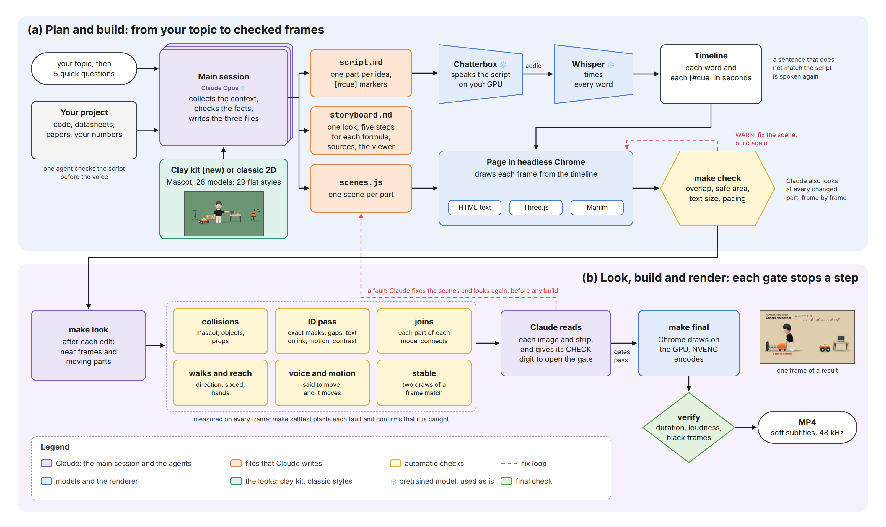
Claude writes three files
script.md,storyboard.mdandscenes.js: one part for each idea and one scene for each part. One agent checks every fact and every formula first.The voice speaks
Chatterbox on a GPU, or Kokoro, small and fast on a CPU.
Whisper times each word
Each word and each
[#cue]gets a time in seconds. If a sentence does not match the script, the engine speaks it again.Chrome draws each frame
The clay world in Three.js, the text in HTML, and Manim for a formula that changes step by step.
make lookafter each editIt measures each changed scene on every frame and draws its near frames and moving parts. Claude reads each image before any build.
make finalrendersThe GPU draws and NVENC encodes, or the CPU does both.
verifychecks the duration, the loudness and black frames. The result is an MP4 with soft subtitles.
The clay look New
The new default: one soft clay look, 28 models that we made in code, and a silent mascot who does the physical work. These frames come from six finished videos. Select a picture to see it at full size.

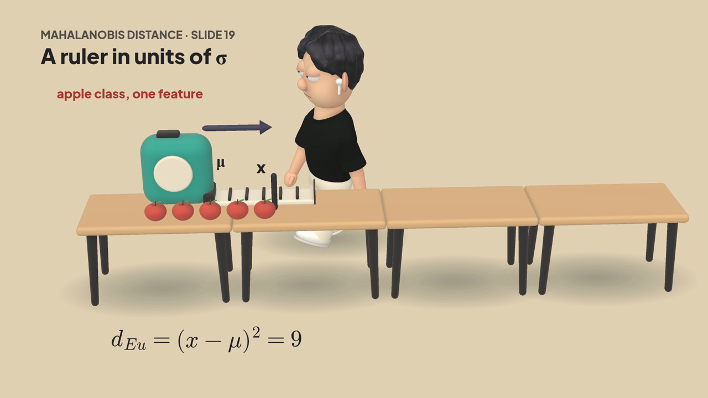


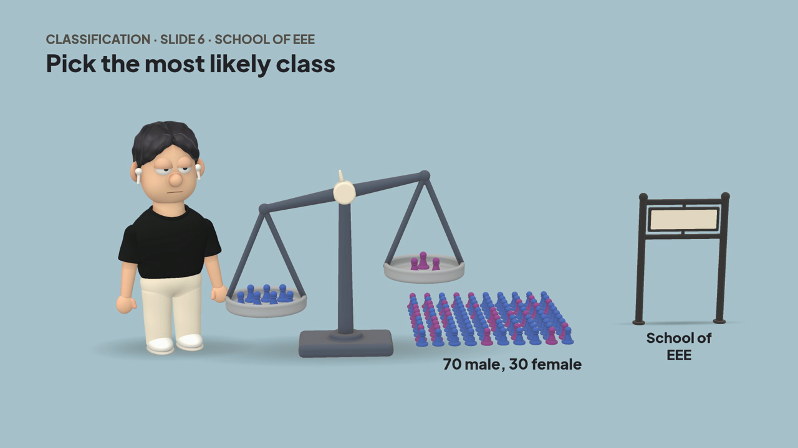

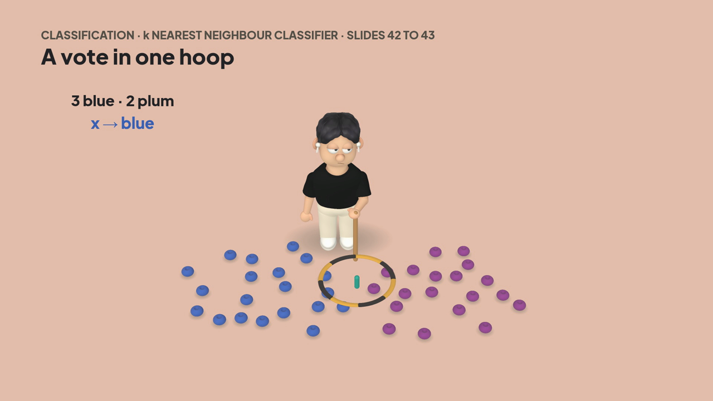

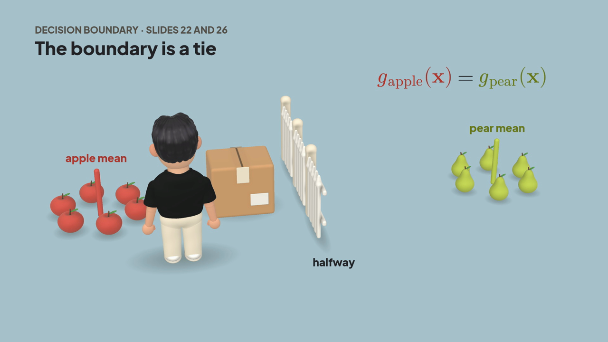

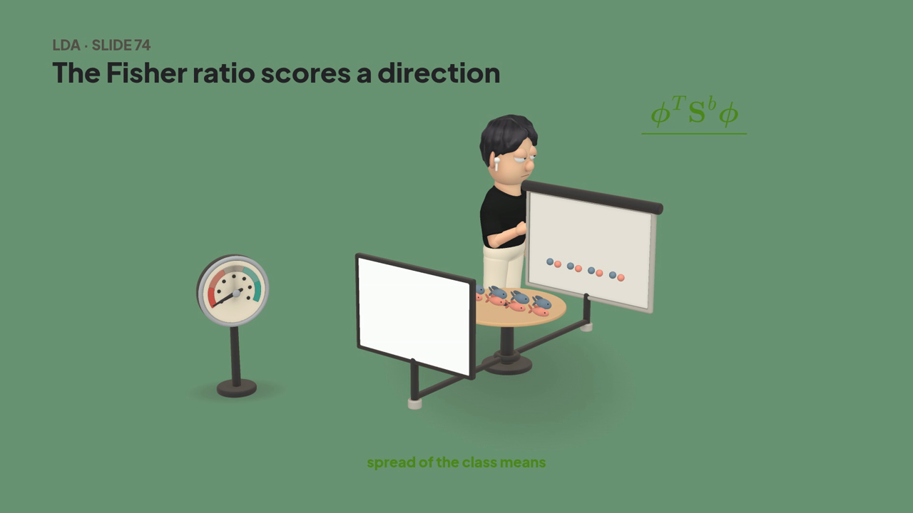

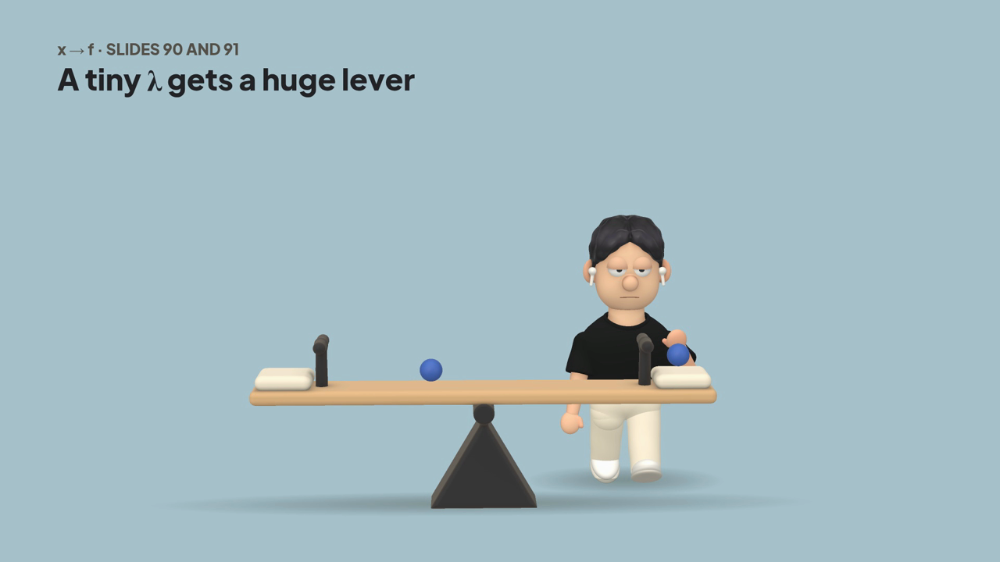

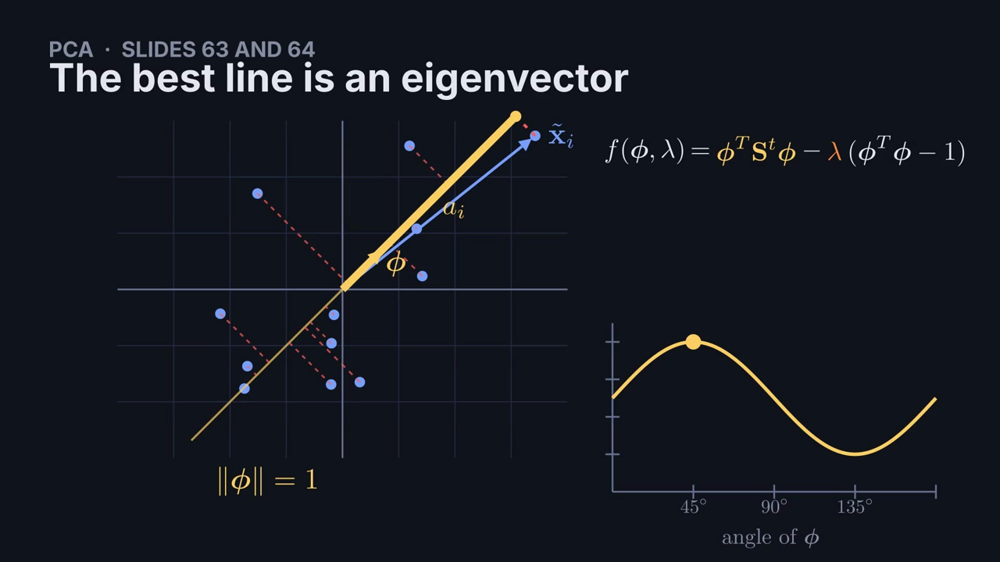

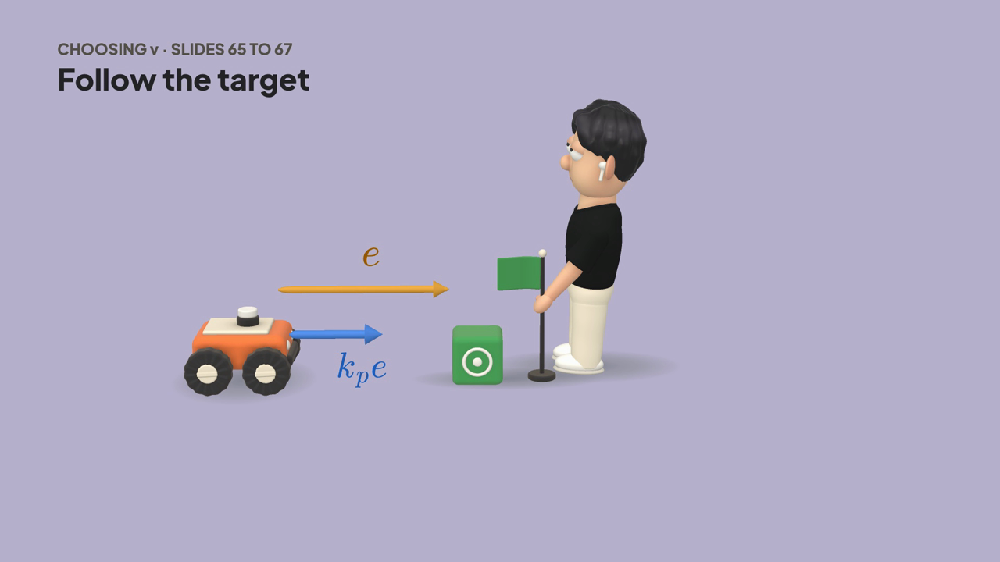

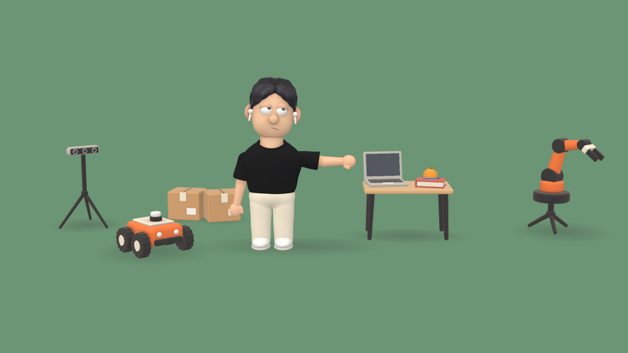

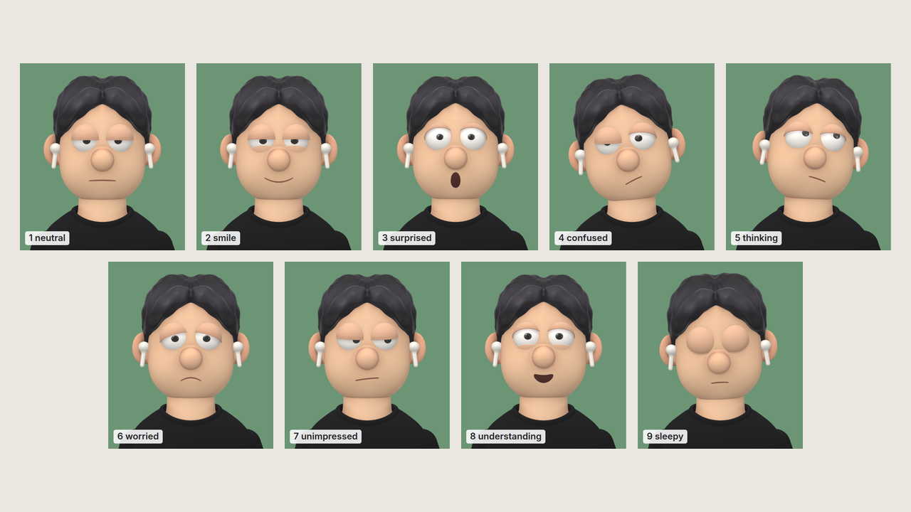
The classic 2D styles
The first version of Kaleidoscope drew in 29 flat styles, and they are still here. Ask for them by name, for example "tell its history as a newsreel", and Claude picks a style for each part. They use the same workflow and the same checks as clay. The guides are in styles/classic.


Checked before render
The engine measures every frame: hands that miss what they hold, objects that pass through each other, text under a 3D thing, a formula that sits still while the voice says it moves. An exact mask of every text, drawing and model shows the tightest gaps, text on a drawing, low contrast and drawings that move. Claude reads the near frames of each edited part and a strip of each thing that moves. make build and make final stop until that is done.
Five questions first
When the skill starts, you choose with a click: clay or the classic 2D styles, who the video is for, the length, when Claude checks with you, and the music.
One script agent
Before the voice is made, it works out every fact again and checks that every formula is explained. It is in agents/.

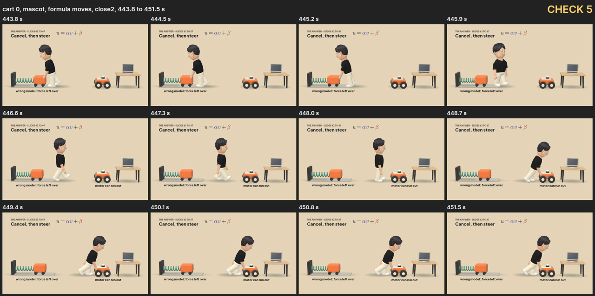
make final. make selftest plants each fault that a video has had and confirms that the engine catches it.Music and sound made from code
The engine makes its music in engine/music.mjs and its sound effects in engine/sfx.mjs, with no samples and no recordings, so there is no licence to clear. The music plays about 13 dB under the voice. These are 30 s previews. The rules are in SOUND.md.
current72 BPM, C Am F G
A calm pad and a slow arpeggio, with no beat. The default track, for any video.
lofi76 BPM, swing
Electric piano, bass, soft drums and vinyl hiss, for a calm video that needs more energy.
sound effects12 sounds
Pop, click, tick, whoosh, swish, thud, stamp, paper, marker, pencil, chime and typing. A scene adds one at a cue with
s.sfx('pop', '#cue'). This demo plays all 12 over the music.
Install
One command checks your computer, asks 4 questions, shows the plan and installs only what you choose. A GPU is not necessary. Disk space: about 12 GB for everything on an NVIDIA GPU, 7 GB on a Mac, and 1.5 GB for the smallest install (Kokoro voice, no Manim). The manual setup is in INSTALL.md.
npx kaleidoscope-videoLater, /setup-kaleidoscope in Claude Code changes these:
- voiceChatterbox on a GPU, or Kokoro on a CPU.
- gpuAuto, or off. NVIDIA on Linux; Metal and VideoToolbox on a Mac (new, not yet tested on a Mac).
- whisperBase, or large: large-v3-turbo times the words more exactly.
Then ask for a video in the conversation where the topic came up:
- Make a video explaining how the EKF fuses wheel odometry and the IMU.
- Make a video on why computed torque control works.